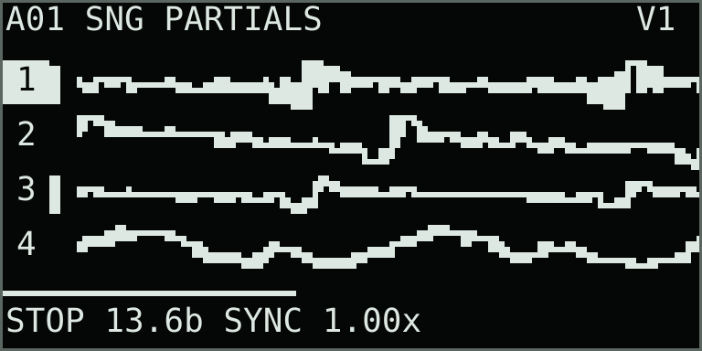
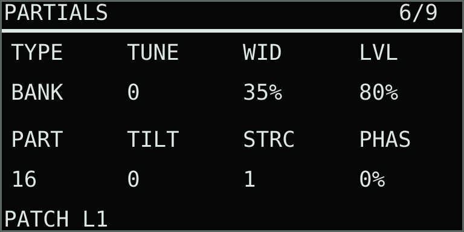
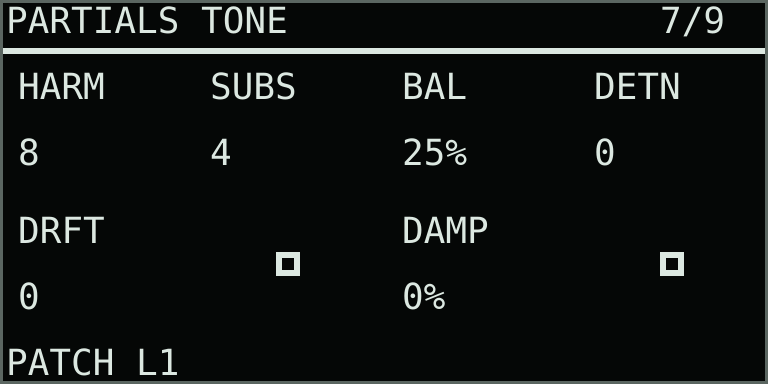
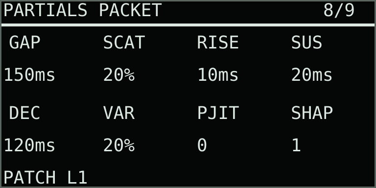
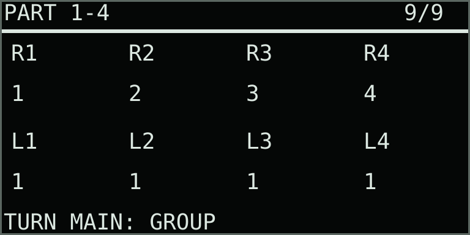
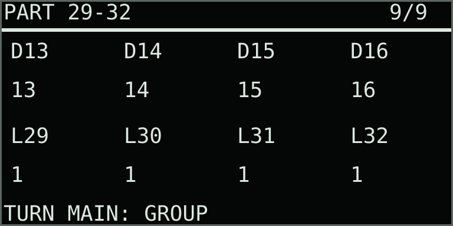

Playback engine 21 of 22
PARTIALS
Build sustained spectra, subharmonic layers and overlapping sound packets with one keyboard-playable engine. Four patches use the normal stack scanning, note envelopes and performance controls.
Play and edit
Choose PARTIALS from ENGINE’s main-encoder list. Track buttons select the patch to edit. Keyboard notes tune the whole spectrum. The waveform view displays live scopes, and stack scanning blends the four patches.

BANK supports up to 32 editable sine components. SUB uses sixteen harmonic multipliers and sixteen subharmonic dividers. PACKET uses up to eight components per packet, with four overlapping packets per patch. Long packet envelopes automatically limit arrival density; existing tails are retained.
POS, FLD, SPD, JOIN, PADS, VARI and trig POS are unavailable because the engine generates sound. Sequence uses the assigned patch and its trig DUR. The shared Amp Envelope controls the complete note. To save the output as a sample, use the normal audio recording workflow.
Parameter pages
Knobs 1–4 form the top row, and 5–8 the bottom row. Squares mark controls that do not affect the current TYPE. Component values and frequencies change smoothly; PHAS applies to new notes or packets. Packet shape and spectrum edits apply to new packets, preserving existing tails.
PARTIALS

| Knob | Display | Range | What it controls |
|---|---|---|---|
| 1 | TYPE | BANK / SUB / PACK | Partials Type. BANK plays continuous components; SUB combines harmonic multipliers and subharmonic dividers; PACKET makes overlapping bursts. Changing type keeps both component grids. |
| 2 | TUNE | -48–48 st | Partials Transpose. Transpose the played note in semitones. |
| 3 | WID | 0–100 % | Partials Stereo Width. Spread components or packets across stereo. Zero is mono. |
| 4 | LVL | 0–100 % | Partials Level. Patch level before the part mixer. |
| 5 | PART | 1–32 | Partial Count. Active components, with fractional values fading in the next. BANK allows 32; PACKET allows eight per packet. SUB uses HARM and SUBS instead. |
| 6 | TILT | -24–12 dB | Spectral Tilt. Level slope across frequency ratios, in dB per octave. |
| 7 | STRC | 0.25–4 | Partial Stretch. Expand or contract the component spacing. One preserves authored ratios. |
| 8 | PHAS | 0–100 % | Initial Phase Spread. Seeded initial phase variation. Applies to new notes or new packets. |
PARTIALS TONE

| Knob | Display | Range | What it controls |
|---|---|---|---|
| 1 | HARM | 1–16 | Harmonic Count. Number of harmonic multipliers in SUB, up to sixteen. |
| 2 | SUBS | 0–16 | Subharmonic Count. Number of subharmonic dividers in SUB, up to sixteen. |
| 3 | BAL | 0–100 % | Subharmonic Balance. Balance between the harmonic and subharmonic banks. Requires SUBS above zero. |
| 4 | DETN | 0–30 cent | Partial Detune. Fixed seeded detuning among components. |
| 5 | DRFT | 0–30 cent | Partial Pitch Drift. Depth of smooth pitch movement in cents. PACKET also moves its held partials. |
| 6 | RATE | 0.01–20 Hz | Partial Drift Rate. Speed of the pitch drift. Requires DRFT above zero. |
| 7 | DAMP | 0–100 % | Upper Partial Decay. Gradually fade higher component numbers while the first remains steady. Available in BANK and SUB; zero holds them steady. |
| 8 | TIME | 10–12000 ms | Spectral Decay Time. Time reference for component fading. Requires DAMP above zero. Reducing DAMP slows further fading; retrigger the note to restore its component envelopes. |
PARTIALS PACKET

| Knob | Display | Range | What it controls |
|---|---|---|---|
| 1 | GAP | 10–2000 ms | Packet Interval. Time between packet arrivals. Overlap is limited to four packets per patch; long envelopes can lengthen the effective interval. |
| 2 | SCAT | 0–100 % | Packet Timing Scatter. Variation around the packet interval. |
| 3 | RISE | 0.5–200 ms | Packet Rise. Packet attack time. Each packet starts and ends smoothly. |
| 4 | SUS | 0–1000 ms | Packet Sustain. Packet time at full level. |
| 5 | DEC | 1–4000 ms | Packet Decay. Packet decay time. |
| 6 | VAR | 0–100 % | Packet Variation. Bounded variation of packet envelope durations and strengths. |
| 7 | PJIT | 0–12 st | Packet Pitch Variation. Random pitch offset for each packet, in semitones. |
| 8 | SHAP | 0.25–4 | Packet Envelope Shape. Curve of the packet attack and decay. |
PARTIALS BANDS

Turn the main encoder to choose groups of four components, from 1–4 to 29–32. Knobs 1–4 set ratios; knobs 5–8 set signed levels, −1 to +1. Zero silences a component, and a negative level reverses its polarity.
In SUB, components 1–16 are multipliers and 17–32 are dividers. A divider of 2 gives one octave below the played note; 3 gives one third of its frequency. Dividers have their own stored values, independent of BANK’s 32 ratios. Changing TYPE preserves both sets. Frequencies near the upper limit fade out; very low subharmonics fade into the audible range rather than folding to another octave.

Clips and existing recipes
Clips, projects, MIDI, E16, curated LFO destinations and Sequence sound locks include all sound controls and component data. Each patch keeps its own state.
Opening an older Partials or Subharmonic WAV recipe transfers its base controls and component data to the selected realtime patch. Bloom’s four spectra load into the available patch lanes, starting with the chosen spectrum in the focused patch. Its original EVOL/RAND timeline, offline curves and file envelope remain in the original recipe; stack scanning supplies the live movement. Some packet variation controls are combined into VAR. Existing WAV audio is unchanged.
Use the timing report when testing dense PACKET settings with full chords and effects. Offline Process now contains Resynth, Hybrid and Convolve.